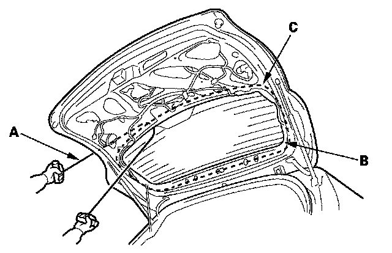
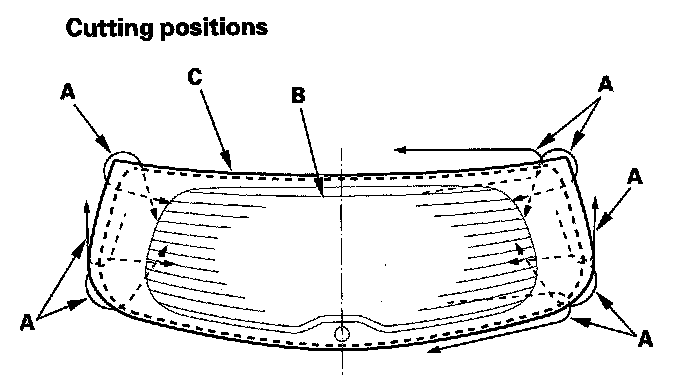
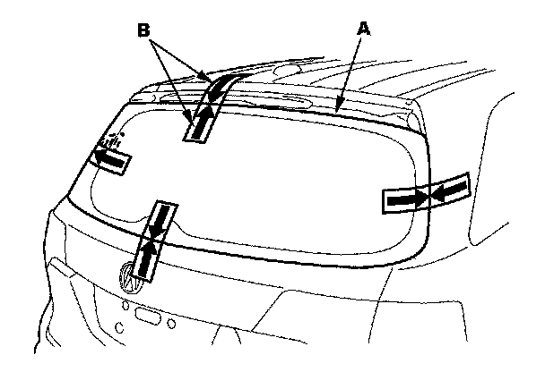

Back Window Glass: Service and Repair
Rear Window ReplacementNOTE:
- Put on gloves to protect your hands.
- Wear eye protection when removing the glass with piano wire.
- Use seat covers to avoid damaging any surfaces.
- Do not damage the rear window defogger grid lines and terminals.
1. Remove these items:
- Tailgate spoiler trim.
- Tailgate lower trim panel
- Rear window wiper motor
2. Disconnect the rear window defogger connectors (A).
3. If the old rear window will be reinstalled, make alignment marks across the glass and body with a grease pencil.
4. Apply protective tape along the inside and outside edges of the tailgate. Using an awl, make a hole through the adhesive from inside the vehicle at the corner portion of the rear window. Push the piano wire through the hole, and wrap each end around a piece of wood.


5. With a helper on the outside, pull the piano wire (A) back and forth in a sawing motion. Hold the piano wire as close to the rear window (B) as possible to prevent damage to the tailgate, and carefully cut through the adhesive (C) around the entire rear window.
6. Carefully remove the rear window.
7. With a putty knife, scrape the old adhesive smooth to a thickness of about 2 mm (0.08 in.) on the bonding surface around the entire rear window opening flange:
- Do not scrape down to the painted surface of the body; damaged paint will interfere with proper bonding.
- Remove the fasteners from the tailgate.
8. Clean the tailgate bonding surface with a sponge dampened in isopropyl alcohol. After cleaning, keep oil, grease and water from getting on the surface.
9. If a new rear window is to be installed, install the rear wiper seal (A) to the rear window (B) with its alignment mark (C) being aligned with the mark (D) on the rear window.
10. If the old rear window is to be reinstalled, check for a damaged rear wiper seal, and replace it with a new one.
11. If the old rear window is to be reinstalled, use a putty knife to scrape off all of the old adhesive, the fasteners and the rubber dams from the rear window. Clean the inside face and the edge of the rear window with alcohol where new adhesive is to be applied. Make sure the bonding surface is kept free of water, oil and grease.
12. Attach the rubber dam (A), fasteners (B, C), and spacer (D) with adhesive tape to the inside face of the rear window (E) as shown. Before installing the rubber dam, apply primer to the area where the adhesive tape will be applied to the inside face of the rear window:
- Be sure the fasteners and rubber dam line up with alignment marks (F).
- Be careful not to touch the rear window where adhesive will be applied.
13. Attach the fasteners (A, B) with adhesive tape to the tailgate as shown.

14. Set the rear window (A) in the opening, and center it. Make alignment marks (B) across the rear window and body with a grease pencil at the four points shown. Be careful not to touch the rear window where adhesive will be applied.
15. With a sponge, apply a light coat of glass primer to the rear window (A) along the edge of the rubber dam (B) as shown, then lightly wipe it off with gauze or cheesecloth:
- With the printed dots (C) on the rear window as a guide, apply the glass primer to both side portions of the rear window.
- Do not apply body primer to the rear window, and do not get body and glass primer sponges mixed up.
- Never touch the primed surfaces with your hands. If you do, the adhesive may not bond to the rear window properly, causing a leak after the rear window is installed.
- Keep water, dust, and abrasive materials away from the primed surface.
16. With a sponge, carefully apply a light coat of body primer to any exposed paint around the flange where new adhesive will be applied. Let the body primer dry for at least 10 minutes:
- Do not apply body primer to any remaining original adhesive on the flange.
- Be careful not to mix up glass and body primer sponges.
- Never touch the primed surfaces with your hands.
17. Cut a "V" in the end of the nozzle (A) on the adhesive cartridge as shown.
18. Pack adhesive into the cartridge without air pockets to ensure continuous delivery. Put the cartridge in a caulking gun, and run a bead of adhesive (A) on the rear window (B) around the edge of the lower rubber dam (C) as shown. With the printed dots (D) on the rear window as a guide, apply the adhesive to both side portions of the quarter glass. Apply the adhesive within 30 minutes after applying the glass primer. Make a slightly thicker bead at each corner.
19. Use suction cups to hold the rear window over the opening, align it with the alignment marks you made in step 14, and set it down on the adhesive. Lightly push on the rear window until its edges are fully seated on the adhesive all the way around.
NOTE: Do not open or close the doors for about an hour until the adhesive is dry.
20. Scrape or wipe the excess adhesive off with a putty knife or towel. To remove adhesive from a painted surface or the rear window, use a soft shop towel dampened with alcohol.
21. After the adhesive has dried, spray water over the rear window and check for leaks. Mark the leaking areas, and let the rear window dry, then seal with sealant. Let the vehicle stand for at least 4 hours after rear window installation. If the vehicle has to be used within the first 4 hours, it must be driven slowly.
22. Reinstall all remaining removed parts.
NOTE: Advise the customer not to do the following things for 2 to 3 days:
- Slam the doors with all the windows rolled up.
- Twist the body excessively (such as when going in and out of driveways at an angle or driving over rough,uneven roads).